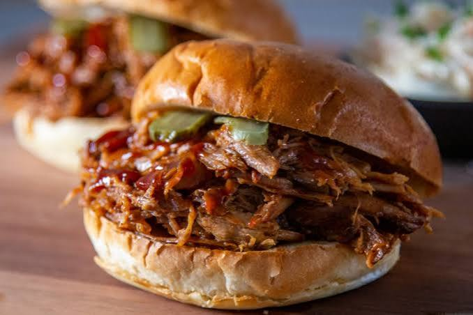

Descripcion
Slow cooker pork is a comforting, highly versatile dish featuring tender, juicy, and fall-apart meat achieved through low-and-slow braising.
a comforting, highly versatile dish featuring tender, juicy, and fall-apart meat achieved through low-and-slow braising. As tough connective tissues break down during the extended cooking process, the pork absorbs surrounding aromatics, spices, and liquids, resulting in an incredibly rich and deeply savory flavor profile
Ingredientes
Pasos